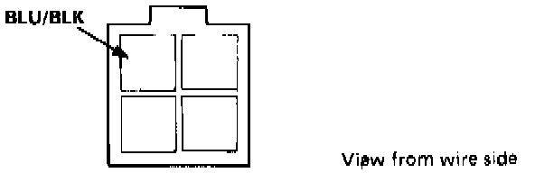

Blower Motor Does Not Run at "Hi"
HEATER ELECTRICAL TROUBLESHOOTINGNOTE:
- Use the digital Multimeter KS-AHM-32-O03 to check.
- Before testing, check the No. 22, 24 and 26 fuses (engine compartment) and No. 16 fuse (under dash fuse box). All tests for voltage or motor operation are with the Ignition ON. If components check OK, the problem is in the wiring.
Symptom: Blower motor does not run at Hi, but runs OK at lower speeds.

1. Check the blower HI relay by grounding its BLU/BLK terminal.
If the motor now runs properly, replace the relay. A less-likely component cause is the control panel.